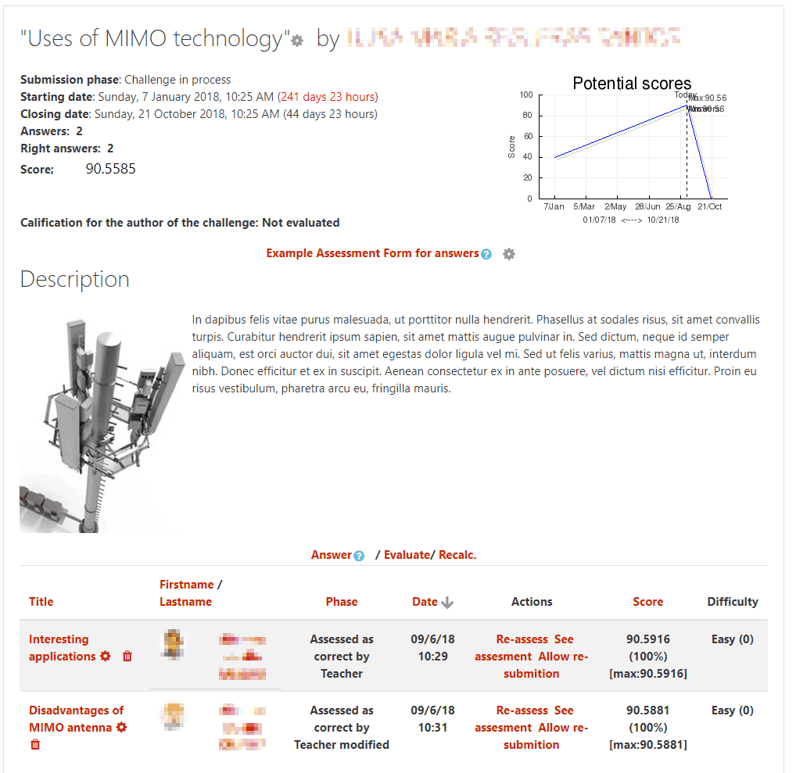
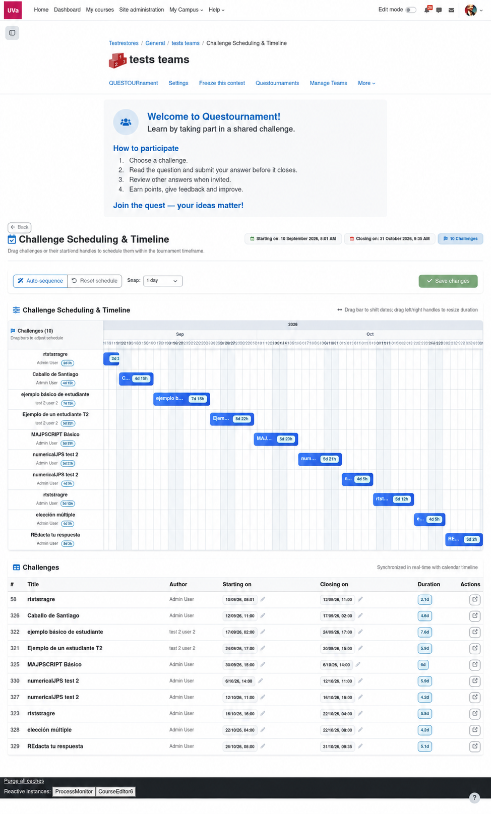

Diseña
Define tema, fechas, puntuación y una guía de evaluación que haga visible la calidad.
Questournament transforma un curso en una arena compartida donde el alumnado propone retos, responde con propósito y aprende evaluando a los demás.

Para docentes que quieren una participación visible, social y significativa, dentro de Moodle.
Define tema, fechas, puntuación y una guía de evaluación que haga visible la calidad.
Publica retos como docente o permite que el alumnado sea autor de la siguiente ronda.
El grupo elige, responde, itera y compite dentro de un ciclo claro.
La evaluación entre iguales convierte cada respuesta en feedback y aprendizaje.
Questournament se integra con el banco de preguntas de Moodle, corrige automáticamente las respuestas objetivas y permite reajustar el calendario de retos mientras evoluciona el curso.
Usa preguntas del banco de Moodle sin duplicar contenidos.
Las respuestas objetivas se comprueban automáticamente.
El alumnado puede crear preguntas automáticas para nuevas rondas.
Arrastra las fechas en la línea temporal y guarda el nuevo plan.

Banco → reto → calendario El progreso se ve
El progreso se veLa clasificación genera energía; el feedback alrededor de cada reto genera aprendizaje. Questournament combina ambos.
Pantallas reales del módulo Questournament organizadas como un manual rápido para docentes y estudiantes.


Empieza con la configuración básica y evoluciona el formato según tu disciplina y tus objetivos.